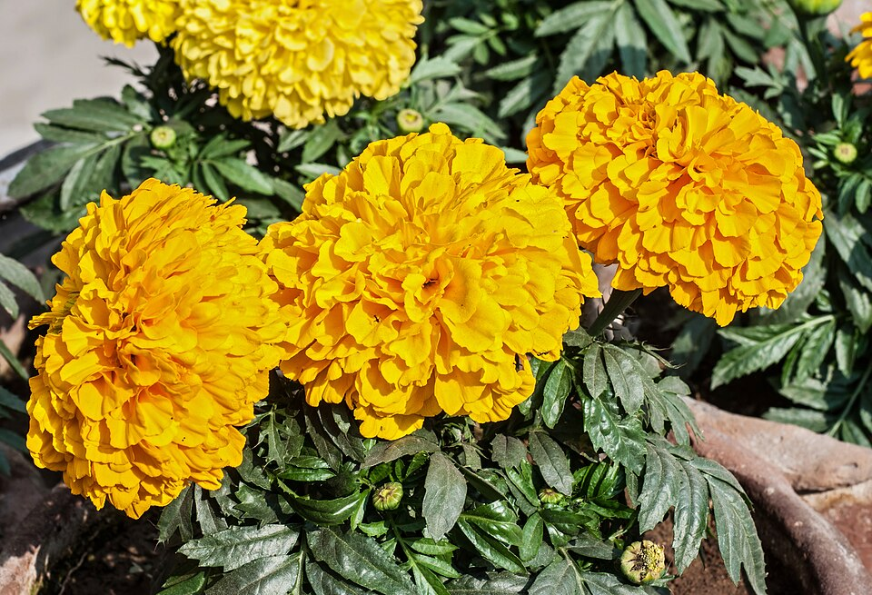

Memoria · 1 y 2 de noviembre
Flores para recordar: Todos los Santos y Día de Muertos
No todas las flores del calendario son para celebrar. El 1 y el 2 de noviembre se llevan a quienes ya no están, y cada tradición tiene la suya.

- 1 de noviembre
- Todos los SantosEspaña y buena parte de Latinoamérica
- 2 de noviembre
- Día de MuertosMéxico
- Flores
- Crisantemos y cempasúchil
- Tipo
- Memoriaflores para quienes ya no están
Todos los Santos: el crisantemo
El 1 de noviembre las familias limpian y adornan las tumbas de sus seres queridos. El crisantemo es la flor de esta fecha: florece en otoño, aguanta muchos días y llevarlo es una forma de decir que se les recuerda.
En coronas y centros también se ven claveles y gladiolos, pero el crisantemo, sobre todo blanco, es el más asociado a este día.
Día de Muertos: el cempasúchil
En México, el cempasúchil es la flor del Día de Muertos. Es una flor nativa de México, naranja o amarilla, cuyo nombre viene del náhuatl. Según la tradición, su color y su olor marcan el camino de las almas hasta la ofrenda, por eso se hacen caminos de pétalos desde la puerta hasta el altar.
En las ofrendas también aparecen la flor de terciopelo, de color magenta, y la nube, blanca. Los pétalos naranjas del cempasúchil son uno de los símbolos visuales de toda la celebración.
¿Qué diferencia hay entre el 1 y el 2 de noviembre?
El 1 de noviembre es Todos los Santos, fiesta católica que en España y gran parte de Latinoamérica se dedica a visitar el cementerio. El 2 de noviembre es el Día de los Fieles Difuntos, y en México es el día grande del Día de Muertos, con ofrendas en casa y visitas a las tumbas. En México, el 1 de noviembre suele dedicarse a recordar a los niños.
Ojo con el crisantemo el resto del año
En España, Francia o Italia el crisantemo se asocia tanto al cementerio que conviene no regalarlo como detalle romántico o de cumpleaños. Si buscas flores moradas para el 9 de noviembre, que cae una semana después, mejor violetas o lavanda.
En Florario estas dos fechas tienen su propia categoría, Memoria, para no mezclarlas con los regalos románticos.
Preguntas frecuentes
¿Qué flores se llevan en Todos los Santos?
Sobre todo crisantemos, la flor tradicional del 1 de noviembre. También se ven claveles y gladiolos en coronas y centros.
¿Qué flor se pone en la ofrenda de Día de Muertos?
El cempasúchil, una flor naranja nativa de México. También se usan la flor de terciopelo y la nube.
¿Por qué se usa el cempasúchil en Día de Muertos?
Según la tradición, su color y su olor guían a las almas hasta la ofrenda. Por eso se hacen caminos de pétalos hasta el altar.
¿Cuál es la diferencia entre Todos los Santos y Día de Muertos?
Todos los Santos es el 1 de noviembre y se celebra en España y buena parte de Latinoamérica. El Día de Muertos es la tradición mexicana, con su día grande el 2 de noviembre.
Última revisión: .